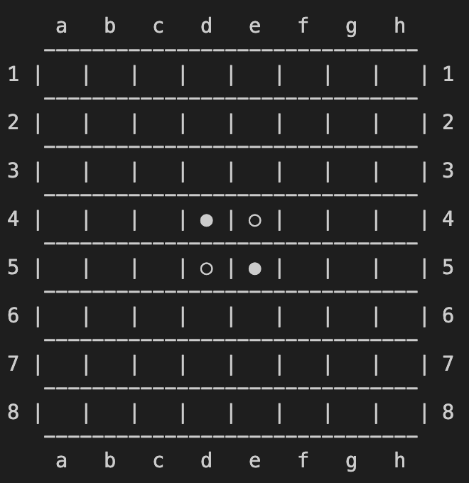

Stage 3 盤面を表すクラスの基本機能を作る
3-1 コンストラクタを実装する
さて、今回から盤面をクラスで表す作業に入っていきます。

またまた込み入ったことするねぇ
いえいえ、ボードゲームは盤面をクラスで表すことが結構多いですよ。なんならチェスや 2048 といった他のボードゲームの解説でもクラスを実装しているので、フッター（ページ最下部）からジャンプして確認できますから、そちらも参考になさってください。
~~~~~~~~~~~~~~~
それでは盤面の初期状態を作るコンストラクタを実装しましょう。その前にまずはクラスを擁するファイル board.py の初期設定を施していきます。
import copy
from config import *
local_logger = setLogger(__name__)
いろいろインポートしたら、2-1 で実装した setLogger 関数を使ってロガーを宣言します。名前はこのモジュール（ファイル）に合わせておきます。__name__ としておけば勝手に board と変換してくれますからね。
それではクラスに入りましょう。
class Board:
def __init__(self, input_board=[], *, status=GAME_PRC, winner=EMPTY, logger=None):
if len(input_board) == SIZE:
self.board = copy.deepcopy(input_board)
else:
self.board = []
for row in range(SIZE):
self.board.append([0 for col in range(SIZE)])
self.board[int(SIZE / 2) - 1][int(SIZE / 2) - 1] = WHITE
self.board[int(SIZE / 2) - 1][int(SIZE / 2)] = BLACK
self.board[int(SIZE / 2)][int(SIZE / 2) - 1] = BLACK
self.board[int(SIZE / 2)][int(SIZE / 2)] = WHITE
# 0:進行中(途中)PRC 1:決着SET
self.game_status = status
self.winner = winner
self.logger = logger or local_logger
~~~~~~~~~~~~~~~
まず最初にクラスを宣言します。
class Board:
def __init__(self, input_board=[], *, status=GAME_PRC, winner=EMPTY, logger=None):
...
名前はわかりやすく Board にしておきました。
今度はコンストラクタを宣言します。
def __init__(self, input_board=[], *, status=GAME_PRC, winner=EMPTY, logger=None):
...
各引数を見ていきましょう。
| input_board | 引き継ぎたい盤面のリスト board |
| status | ゲームが進行中か終了しているか |
| winner | 勝者（ゲーム途中では EMPTY） |
| logger | クラス内部で主に使うロガー |
まず input_board には、引き継ぎたい盤面の board を入れます。デフォルトでは空のリストですね。
どうやって使うん？
例えば盤面を複製したいときなんかは
MainBoard = Board()
CopiedBoard = Board(MainBoard.board)
みたいな形にします。
~~~~~~~~~~~~~~~
status はゲームが進行中かどうか判断するための bool 型変数です。
def __init__(self, input_board=[], *, status=GAME_PRC, winner=EMPTY, logger=None):
ここに入るのは
- ゲーム進行中 GAME_PRC
- ゲーム終了 GAME_SET
のいずれかです。2-2 で両方とも定義していますので、忘れた方は再度確認してください。
winner は勝者を表します。決着がついていない間は公平を期すため EMPTY を入れておきますが、GAME_SET となってどちらかに勝敗が決した場合はその勝者を入れます。引き分けなら EMPTY です。
デフォルト None だけどなんで？
ではその説明も兼ねてコンストラクタの中身に入りましょう。
~~~~~~~~~~~~~~~
まず最初に盤面の設定から入ります。
なんだよ、ロガーの話じゃねえんかよ
if len(input_board) == SIZE:
self.board = copy.deepcopy(input_board)
else:
self.board = []
for row in range(SIZE):
self.board.append([0 for col in range(SIZE)])
初めの if は引数 input_board に盤面が代入されたときの話です。この時盤面を表すリストの長さは SIZE と一致するはずですよね？

確かにな
と言うことで、この時は self.board に input_board を完全にコピーします。そのため copy モジュールの deepcopy メソッドを使ってあげてください。
if len(input_board) == SIZE:
self.board = copy.deepcopy(input_board)
なんでわざわざそんなことせなあかんの
リストはミュータブルなので、下手に
self.board = input_board
とかやってしまうと self.board の変更がそのまま input_board にも及んでしまうからです。
わからないようであれば上のリンクから解説へ飛んで勉強してきてください。
~~~~~~~~~~~~~~~
一方で input_board に何も入れられなかった場合を考えます。つまり else の分岐先ですね。
else:
self.board = []
for row in range(SIZE):
self.board.append([0 for col in range(SIZE)])
self.board[int(SIZE / 2) - 1][int(SIZE / 2) - 1] = WHITE
self.board[int(SIZE / 2) - 1][int(SIZE / 2)] = BLACK
self.board[int(SIZE / 2)][int(SIZE / 2) - 1] = BLACK
self.board[int(SIZE / 2)][int(SIZE / 2)] = WHITE
まず最初に盤面をリストとして宣言します。
else:
self.board = []
for row in range(SIZE):
...
次いで SIZE × SIZE のマスを作って中身を全て 0 つまり EMPTY にします。
else:
self.board = []
for row in range(SIZE):
self.board.append([0 for col in range(SIZE)])
これで SIZE × SIZE の何も置いていない盤面が出来上がりました。リバーシは最初こんな形で白黒の石が合計 4 つ置かれている状態からスタートします。
と言うことで、まっさらな self.board に 4 つ石を置いていきましょう。
self.board[int(SIZE / 2) - 1][int(SIZE / 2) - 1] = WHITE
self.board[int(SIZE / 2) - 1][int(SIZE / 2)] = BLACK
self.board[int(SIZE / 2)][int(SIZE / 2) - 1] = BLACK
self.board[int(SIZE / 2)][int(SIZE / 2)] = WHITE
石の位置が真ん中になるように、リストのインデックスには注意してください。
あとは諸々のパラメーターを設定しておきましょう。
# 0:進行中(途中)PRC 1:決着SET
self.game_status = status
self.winner = winner
self.logger = logger or local_logger
上から順に
- 進行中かゲームセットしたか
- 勝者はだれか
- ロガーは何か
を設定していますね。
結局ロガー何やってんのかわかんねえんだけど
では引数の logger に何か入れられた場合と何も入れられなかった場合で分けて考えてみましょう。
引数に何か入れられたら、
logger or local_logger
って何表します？
logger の中身がそのまんま self.logger に代入されんのか
その通りですね。一方、引数 logger に何にも入れられなかった場合、こいつはデフォルトでは None ですから
logger or local_logger == local_logger
となります。
それでデフォルトでは local_logger をそのまんまロガーに使おうってわけか。めんどくせーことすんなよ
これでコンストラクタは実装完了です。お疲れ様でした。